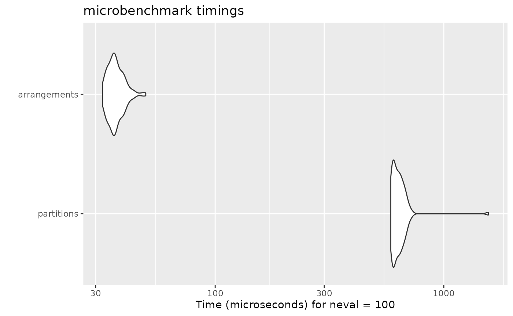

The goal of this document is to compare the performances of some of the existing packages for generating combinations, permutations and partitions.
- gtools 3.8.1
- combinat 0.0-8
- multicool 0.1-11
- partitions 1.9-22
- permute 0.9-5
- permutations 1.0-6
- RcppAlgos 2.4.1
library(gtools) library(combinat) library(multicool) library(partitions) library(permute) library(permutations) library(RcppAlgos) library(arrangements) gtools.permutations <- gtools::permutations gtools.combinations <- gtools::combinations partitions.compositions <- partitions::compositions utils.combn <- utils::combn
gtools::permutations, gtools::combinations, partitions::compositions and utils::combn are renamed because they are being overwritten by other packages.
Permutations
Permutations of 6 items
autoplot(microbenchmark( gtools = gtools.permutations(6, 6), multicool = allPerm(initMC(1:6)), partitions = partitions::perms(6), permuate = allPerms(6), permutations = allperms(6), RcppAlgos = permuteGeneral(6, 6), arrangements = permutations(6) ))

5-Permutations of 7 items
autoplot(microbenchmark( gtools = gtools.permutations(7, 5), RcppAlgos = permuteGeneral(7, 5), arrangements = permutations(7, 5) ))

Permutations of multiset

K-Permutations of multiset
f <- c(2, 1, 2, 1, 2) x <- rep(1:5, f) autoplot(microbenchmark( multicool = allPerm(initMC(x)), RcppAlgos = permuteGeneral(5, 6, freqs = f), arrangements = permutations(k = 6, freq = f) ))

Combinations
7-Combinations of 15 items
autoplot(microbenchmark( gtools = gtools.combinations(15, 7), combinat = combn(15, 7), utils = utils.combn(15, 7), RcppAlgos = comboGeneral(15, 7), arrangements = combinations(15, 7) ))

Combinations with replacement of 9 items
autoplot(microbenchmark( gtools = gtools.combinations(9, 6, repeats.allowed = TRUE), RcppAlgos = comboGeneral(9, 6, repetition = TRUE), arrangements = combinations(9, 6, replace = TRUE) ))

Combinations of multiset
f <- c(2, 1, 2, 1, 2, 2, 1, 2) x <- rep(1:8, f) autoplot(microbenchmark( RcppAlgos = comboGeneral(8, 6, freqs = f), arrangements = combinations(k = 6, freq = f) ))

Partitions
Partitions of 30
autoplot(microbenchmark( partitions = parts(30), arrangements = partitions(30) ))

Partitions of 50 into 10 parts
autoplot(microbenchmark( partitions = restrictedparts(50, 10, include.zero = FALSE), arrangements = partitions(50, 10) ))

Partitions of 50 into distinct parts
autoplot(microbenchmark( partitions = diffparts(50), arrangements = partitions(50, distinct = TRUE) ))

Compositions
Compositions of 8
autoplot(microbenchmark( partitions = partitions.compositions(8, include.zero = FALSE), arrangements = compositions(8) ))

Compositions of 20 into 5 parts
autoplot(microbenchmark( partitions = partitions.compositions(20, 5, include.zero = FALSE), arrangements = compositions(20, 5) ))
